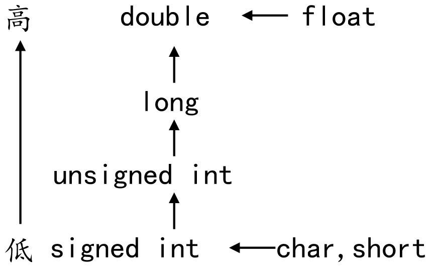

<!DOCTYPE lake>
<p data-lake-id="uf16c11b0" id="uf16c11b0"><span data-lake-id="u7746fcf4" id="u7746fcf4">数据有不同的类型，不同类型数据之间进行混合运算时涉及到类型的转换问题。</span></p><p data-lake-id="u51ea5b01" id="u51ea5b01"><span data-lake-id="u6324344c" id="u6324344c">转换的方法有两种：</span></p><ul list="u3d2bf275"><li data-lake-id="u90c75df1" fid="u03923bd1" id="u90c75df1"><span data-lake-id="u1c256606" id="u1c256606">自动类型转换（隐式转换）：遵循一定的规则，由编译系统自动完成</span></li><li data-lake-id="u5f7b3344" fid="u03923bd1" id="u5f7b3344"><span data-lake-id="u3e740af5" id="u3e740af5">强制类型转换（显示转换）：把表达式的运算结果强制转换成所需的数据类型</span></li></ul><ul data-lake-indent="1" list="u3d2bf275"><li data-lake-id="u884fa86e" fid="u03923bd1" id="u884fa86e"><span data-lake-id="ua8e2afff" id="ua8e2afff">语法格式： (类型)变量或常量</span></li></ul><p data-lake-id="u3de4ce13" id="u3de4ce13"><strong><span data-lake-id="u93ab57bd" id="u93ab57bd">类型转换的原则：</span></strong></p><p data-lake-id="u610ecdeb" id="u610ecdeb"><span data-lake-id="uac693d40" id="uac693d40">占用内存字节数少(值域小)的类型，向占用内存字节数多(值域大)的类型转换，以保证精度不降低、数据不溢出。</span></p><p data-lake-id="u78d4a050" id="u78d4a050" style="text-indent: 2em; padding-left: 2em"></p><p data-lake-id="u10fc0569" id="u10fc0569" style="text-indent: 2em; padding-left: 2em"><br/></p><span class="yuque-card-unsupported">[codeblock]</span><p data-lake-id="uf17e9f85" id="uf17e9f85"><span data-lake-id="ubd6df4d4" id="ubd6df4d4">运行结果：</span></p><span class="yuque-card-unsupported">[codeblock]</span>